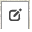
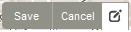
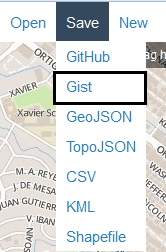

Is the route not aligned to the street properly? Is the route as shown here not accurate? You can help us improve the route network. Edit right in your browser and send us your updates.
Choose a route you want to edit from the bus or jeepny menu. Then click here to edit the chosen route.
Click on the edit icon  to begin. Move the points by clicking and dragging them.
When you are done editing, you will need to save twice. First, click the edit icon again and click save there.  Second, from the top of the screen click Save, Gist. 
When you save, a message will appear and the URL will change. Copy the URL, paste it in the box below, and click "Submit Changes".